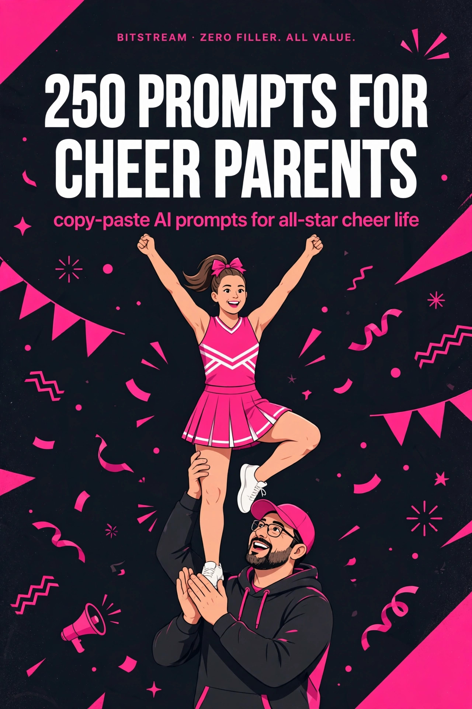

BITSTREAM · ZERO FILLER. ALL VALUE.
250 Prompts for
Cheer Parents
250 copy-paste AI prompts for all-star cheer life.
Open a free AI tool, paste, fill in the blanks, done.
NICHE PACK · $10.99
How to use this pack (60 seconds)
- Open a free AI tool — ChatGPT (chatgpt.com), Claude (claude.ai), or Gemini (gemini.google.com). No paid plan needed.
- Copy any prompt and replace the [BRACKETED] parts with your athlete's details.
- Be specific. Age, level, team, gym, budget, travel dates — specifics in, quality out.
- Treat the first answer as a draft. Reply with "make it shorter," "add prices," or "more detail on Sunday" until it's right.
- Talk instead of typing. Every one of these tools has a voice mode — ramble in the car on the way to practice, let it turn the ramble into a plan.
Rule 1 — You're the manager, not the coach. Use these prompts to handle the logistics, money, and emotions around the sport — and let the coaches coach.
Rule 2 — Verify medical and money facts. For injuries, nutrition, or big expenses, ask for sources or check with the gym, a doctor, or a trainer. AI plans; professionals confirm.
Rule 3 — One comp at a time. Don't try to AI the whole season tonight. Pick one prompt. The travel plan, the fundraiser, the tryout prep.
1 · Tryout Prep & Skill Tracking
Get ready for evals, clinics, and team placements — and track progress all season long.
PROMPT 001
Tryout readiness checklist
My [12-year-old] is trying out for [all-star level 3] in [8 weeks]. Her current skills: [roundoff back handspring, working on tuck; solid flyer]. Build a week-by-week tryout prep plan covering tumbling, stunting, jumps, and motions, plus what judges actually look for at tryouts.
PROMPT 002
Skill gap analyzer
Here are the typical skills needed for [level 4]: [standing tuck, roundoff back handspring layout, etc.]. My athlete currently has: [list skills]. Identify the gaps, rank them by how hard they are to close, and suggest a realistic timeline for each.
PROMPT 003
Private lesson game plan
We're paying for private tumbling lessons at [$60/hour], one hour a week. My athlete needs to clean up [her roundoff back handspring — bent legs, low chest]. Write a list of specific questions and goals to bring the coach so every paid minute counts.
PROMPT 004
Tryout day pep script
Write me a short, calming pep talk I can give my [10-year-old] in the car before tryouts. She's nervous about [tumbling in front of judges]. Warm, confident, no pressure — under 150 words.
PROMPT 005
Level placement decoder
Explain the USASF cheer levels [1 through 6] in plain parent language: what tumbling and stunting each level requires, what a typical [age 11] athlete looks like at each level, and how gyms usually decide placements.
PROMPT 006
Clinic vs. private vs. open gym
Our gym offers tryout clinics at [$40/session], privates at [$65/hour], and open gym at [$15]. My athlete needs work on [jumps and motions]. Compare the three options for cost-effectiveness and tell me how to mix them over the next [6 weeks].
PROMPT 007
Skill video review prompts
I film my athlete's tumbling at home. Give me a checklist of exactly what to look at when reviewing video of a [back handspring] — body positions, timing cues, and the 5 most common form breaks to spot.
PROMPT 008
New skill fear plan
My [13-year-old] has a mental block on [her back tuck] — she had it, lost it after a fall. Give me a step-by-step parent's guide to helping her work through it: what to say, what not to say, drills to rebuild confidence, and when to back off.
PROMPT 009
Flyer vs. base decision helper
My [9-year-old, 62 lbs] is being considered as a flyer but she loves basing. Explain the pros and cons of each role at her age and size, what coaches look for, and 5 questions to ask her coach about the best fit.
PROMPT 010
Off-season training plan
Build a [10-week] off-season training plan for a [level 2, age 10] cheerleader training [3 days a week, 45 minutes] at home. Include tumbling drills, jump conditioning, flexibility, and core work. No gym equipment needed.
PROMPT 011
Tryout FAQ email draft
Draft a polite email to our gym asking: [tryout dates, fees, what to wear, skill requirements for level 3, whether parents can watch]. Professional, warm, concise.
PROMPT 012
Skill milestone tracker
Create a printable-style skill tracker table for a [level 3] cheerleader with columns for skill name, date first attempted, date achieved, and date competition-ready. Include all standard level 3 tumbling, stunt, jump, and motion skills.
PROMPT 013
Crossover team pros and cons
Our gym offered my [14-year-old] a crossover spot on a second team (extra [$150/month] plus more comps). List the real pros and cons — skill development, burnout risk, cost, schedule — and 5 questions to ask before we commit.
PROMPT 014
Switching gyms checklist
We're considering switching gyms mid-season. Give me a decision checklist covering: contract/fee obligations, skill level fit at the new gym, team culture questions to ask, timing, and how to have the conversation with our current coaches respectfully.
PROMPT 015
Half-year team evaluator
Our gym offers a half-year team starting in [November] at [$1,200 total] vs. full-year at [$3,800]. My [8-year-old beginner] wants to try cheer. Compare the two paths and recommend which fits a first-timer.
PROMPT 016
Tumbling progression map
Map the standard tumbling progression from [forward roll to full] in order, with the prerequisite skill for each step, typical time to learn each at [age 12, 2 practices a week], and the most common sticking point per skill.
PROMPT 017
Stunt group role explainer
Explain stunt group positions — [flyer, main base, side base, backspot] — in simple terms: what each person does, what body type and strengths suit each role, and how coaches typically assign them.
PROMPT 018
Tryout outfit and prep list
Make a tryout-day checklist for a [13-year-old]: what to wear, hair, what to bring in the bag, what to eat and when, warmup routine, and 3 things to do the night before.
PROMPT 019
Post-tryout placement talk
My athlete didn't make the team/level she wanted — she made [level 2 instead of level 3] and she's crushed. Write me a conversation guide: how to validate her feelings, reframe the placement positively, and set goals for next season without toxic positivity.
PROMPT 020
Jump technique breakdown
Break down the three main cheer jumps — [toe touch, pike, herkie] — with the key technique point for each, common mistakes, and 3 at-home drills per jump to improve height and form.
PROMPT 021
Motion drill plan
My athlete's motions are sloppy — [bent wrists, low Vs, slow transitions]. Create a 15-minute daily motion drill routine she can do in front of a mirror, with counts and specific corrections.
PROMPT 022
Flexibility routine for flyers
Build a [20-minute] daily flexibility routine for a [flyer, age 11] targeting [heel stretches, scorpions, and needles]. Include hold times, reps, warmup, and safety notes. No partner needed.
PROMPT 023
Strength plan for bases
Build a [3-day-a-week] bodyweight strength plan for a [base, age 14] to build stunt-ready shoulders, legs, and core. Include exercises, sets, reps, and progression over [8 weeks].
PROMPT 024
Scoresheet decoder
Explain how all-star cheer scoresheets work in plain parent language: the categories [stunts, pyramids, tumbling, jumps, dance], what "difficulty" vs. "execution" means, and how deductions happen.
PROMPT 025
Season goals worksheet
Create a season goal-setting worksheet for my [12-year-old] cheerleader with sections for: 3 skill goals, 1 teamwork goal, 1 personal growth goal, and a mid-season check-in. Make it encouraging and age-appropriate.
2 · Practice Schedules & Time Management
Juggle gym hours, school, siblings, and your own life without losing your mind.
PROMPT 026
Weekly schedule builder
Build a weekly schedule for our family. Cheer practice is [Tue/Thu 6–8:30pm, tumbling Wed 5–6pm], school ends at [3pm], homework takes [1 hour], sibling has [soccer Mon/Wed]. Fit in dinner, sleep by [9:30pm], and one free evening. Flag the conflicts.
PROMPT 027
Homework-before-practice plan
My [11-year-old] gets home at [3:30pm] and practice starts at [6pm]. Create a tight after-school routine: snack, homework, rest, pack the cheer bag, leave on time. Include a backup plan for heavy-homework days.
PROMPT 028
Carpool organizer
Draft a message to our team group chat proposing a practice carpool. Include: [our neighborhood, practice days/times, how many kids we can take, rotation idea]. Friendly, low-pressure, easy to say yes to.
PROMPT 029
Multi-kid activity juggler
I have [3 kids] in [cheer, basketball, and dance] with overlapping practices [Mon–Thu evenings]. Create a master calendar system plus a weekly Sunday planning routine so nothing falls through the cracks.
PROMPT 030
Practice bag packing list
Make the ultimate cheer practice bag checklist for a [flyer, age 12]: shoes, ankle braces, hair kit, water, snacks, extra uniform pieces, first-aid basics. Organize by "every practice" vs. "keep in the bag always."
PROMPT 031
Extra practice decision tool
My athlete wants to add [a second tumbling class, $80/month, Friday evenings]. Help me decide: weigh skill benefit vs. cost vs. burnout risk vs. family time. Give me a scoring framework and a recommendation based on: [she's level 3 pushing for level 4, age 13].
PROMPT 032
Choreography week survival
Choreography weekend is [3 days, 6 hours each] and my [10-year-old] will be wiped. Plan the weekend: meals, sleep, what to pack, recovery between days, and how to keep her energy up without junk food crashes.
PROMPT 033
School-cheer double duty plan
My [15-year-old] does both school cheer [practice Mon/Wed] and all-star [Tue/Thu/Sat]. Build a weekly plan covering schoolwork, rest, and injury prevention. Include warning signs she's overdoing it.
PROMPT 034
Missed practice email
Draft a respectful email to the coach: my athlete will miss [Thursday practice] because of [a family wedding out of town]. Acknowledge the team impact, ask what she should work on at home, no excuses.
PROMPT 035
Summer schedule planner
Plan our summer around cheer: [gym closed July 4th week, choreography camp Aug 10–12, family vacation flexible]. Build a summer calendar with training, rest weeks, vacation window, and back-to-school prep.
PROMPT 036
Morning practice routine
Saturday practices start at [8am] and we're always rushing. Create a Friday-night prep checklist and a Saturday morning timeline working backward from [7:30am departure] — hair, breakfast, bag, out the door calm.
PROMPT 037
Study hall on the road
We travel [2 weekends a month] for comps and homework suffers. Design a travel study system: what to pack, when to study around comp schedules, and how to communicate with teachers about absences.
PROMPT 038
Coach communication template
Write 5 copy-paste message templates for common coach communications: running late, schedule conflict, injury update, skill question, and thank-you note. Professional parent tone, under 100 words each.
PROMPT 039
Rest day enforcer
My [12-year-old] wants to tumble every single day. Explain in parent-friendly terms why rest days matter for [growing athletes], then build a weekly schedule with [2 true rest days] that she'll actually accept.
PROMPT 040
Team parent group chat starter
Draft a welcome message for a new team parent group chat: introduce the purpose [carpools, comp info, emergency updates], set 3 simple ground rules, and keep it warm and inclusive.
PROMPT 041
Holiday season juggle plan
December has [2 comps, school concerts, family travel]. Build a December master plan: which events are non-negotiable, where we can flex, gift-buying shortcuts, and how to keep the athlete rested through it all.
PROMPT 042
Practice observation guide
Our gym allows parent viewing [once a month]. Give me a guide for what to actually watch for: signs of good coaching, how my athlete's effort looks, red flags, and what NOT to do from the viewing area.
PROMPT 043
Sibling fairness plan
My non-cheer [8-year-old] feels left out with all the attention on his sister's cheer. Give me 10 concrete ways to make him feel valued during comp season, plus a conversation script for the "it's not fair" talk.
PROMPT 044
Work-cheer balance for parents
I work [full-time, 8–5] and practice pickup is [8:30pm across town]. Design a system: backup pickup people, what to do with the [2-hour] gap, meal solutions, and how to protect my own sleep.
PROMPT 045
Team bonding organizer
Plan a low-cost team bonding event for [18 athletes, ages 10–12]: [3 hours on a Saturday, under $150 total]. Give me 3 activity options, a timeline, and a parent sign-up message.
PROMPT 046
End-of-season reset plan
Season ends [in May]. Create a 4-week post-season reset: physical rest, gear inventory and cleaning, financial review of the season, goal-setting for next year, and a family celebration.
PROMPT 047
Private lesson scheduler
We can afford [2 privates a month at $60 each]. My athlete needs [tumbling cleanup and flyer flexibility]. Design a monthly rotation: which focus each session, what to practice between sessions, and how to measure progress.
PROMPT 048
Gym closure backup plan
Our gym closes for [2 weeks in August]. Build a home training plan to maintain [level 3 tumbling and stunt conditioning] without losing progress — safe drills only, no unsupervised flipping.
PROMPT 049
New team parent orientation
Write a "new cheer parent survival guide" I can share with rookie families: the 15 terms they'll hear [baskets, deductions, crossover, bid, etc.], unwritten gym etiquette, and what to expect the first month.
PROMPT 050
Season calendar template
Create a season-at-a-glance calendar template for an all-star season [June–May] with slots for: practices, tumbling classes, choreography, comps, travel, payment due dates, uniform fittings, and breaks. Printable format.
3 · Competition Day Survival
From wake-up to awards — run comp day like a pro.
PROMPT 051
Comp day timeline builder
Our report time is [7:30am], warmup at [9:15am], performance at [10:05am], awards at [1pm]. Build a minute-by-minute comp day timeline working backward: wake-up, breakfast, hair/makeup, drive, check-in, and buffer time.
PROMPT 052
Comp day packing master list
Make the ultimate competition day packing list: uniform, shoes, bow, makeup kit, hair supplies, warmup gear, snacks, water, entertainment for downtime, emergency kit [safety pins, band-aids, pain reliever, sewing kit], and parent survival items.
PROMPT 053
Hair and makeup tutorial plan
I need to do comp hair [high pony with curls] and makeup [stage makeup: bold eyes, red lips] on my [9-year-old] in under [45 minutes]. Give me a step-by-step routine with product list and order of operations.
PROMPT 054
Pre-performance calming routine
My [11-year-old] gets terrible comp-day nerves — [nausea, crying in warmup]. Create a calming toolkit: breathing exercises, what to say in the 10 minutes before, distraction techniques, and what NOT to say.
PROMPT 055
Warmup room parent guide
Explain what happens in the warmup room at all-star comps: the stations, timing, what athletes do, why parents aren't allowed in, and how to prepare my athlete for it beforehand.
PROMPT 056
Scoresheet reading for parents
Our team got [a 94.2 with deductions in pyramid and tumbling]. Explain in plain language what the score means, where we lost points, and 5 constructive questions to ask the coach — not complaints.
PROMPT 057
Bad performance recovery talk
The routine fell apart — [two stunt falls, a tumbling bust] — and my [13-year-old] is devastated and blaming herself. Write me a conversation guide for the car ride home: validate, reframe, and rebuild without dismissing her feelings.
PROMPT 058
Winning gracefully script
Our team just won [first place and a bid] and my athlete is gloating toward a rival team. Give me a quick parent script for celebrating big while teaching sportsmanship — firm but loving, under 100 words.
PROMPT 059
Comp day food plan
Plan comp-day food for a [12-year-old] athlete: pre-dawn breakfast, what to eat between report and performance [2.5 hours], post-performance meal, and snacks to pack. High energy, no stomach issues, no sugar crash.
PROMPT 060
Two-day comp strategy
We're at a 2-day national: Day 1 prelims, Day 2 finals. Plan both days: sleep, food, how to handle Day 1 disappointment or overconfidence, recovery overnight, and Day 2 morning routine adjustments.
PROMPT 061
Spectator seating game plan
Give me a spectator's guide to all-star comps: when to arrive for good seats, what [the "arena" vs. "hall" setup] means for viewing, filming rules, and etiquette [no flash, stay seated during routines].
PROMPT 062
Filming the routine right
I want great video of the routine. Give me phone filming tips: best seating position, settings [4K, 60fps], how to keep the whole formation in frame, and what to do with the footage after.
PROMPT 063
Awards ceremony prep
Explain how awards work at all-star comps: placements, division splits [small/large, age groups], what "bids" are [paid/partial/at-large to Worlds/Summit], and how to explain results to a disappointed [10-year-old].
PROMPT 064
Last-minute uniform fix
It's comp morning and [the uniform top zipper broke]. Give me 5 emergency fixes with items from a standard comp bag, plus what to tell the coach and how to keep my athlete calm.
PROMPT 065
Forgotten item rescue plan
We forgot [her cheer shoes] and we're [40 minutes] from the venue. Give me a decision tree: borrow options, buy options at the venue, who to ask, and how to prevent this forever with a system.
PROMPT 066
Comp day budget tracker
Create a comp-day spending tracker: categories for [parking, food, spectator fees, merch, photos/videos], a pre-set limit of [$150], and tips to enjoy the day without the money guilt.
PROMPT 067
Dealing with difficult parents
Another parent on our team [yells at the judges' scores loudly and criticizes kids]. Give me 3 calm, non-confrontational ways to handle it in the moment and a script for talking to the team rep if it continues.
PROMPT 068
Weather contingency for outdoor comps
We're competing at an outdoor event and the forecast says [rain, 55°F]. Plan for it: what to pack, how cold affects warmup and performance, hair/makeup adjustments, and athlete morale.
PROMPT 069
Post-comp social media post
Write 3 Instagram caption options for our comp day post: one proud, one funny, one heartfelt. Include [team name, placement] and hashtag suggestions. No trash talk about other teams.
PROMPT 070
Comp weekend reflection
Create a post-comp reflection worksheet for my [12-year-old]: 3 things that went well, 1 thing to work on, how she felt, and 1 goal for next comp. Positive framing, 10 minutes max.
PROMPT 071
Bid event explainer
Explain cheer "bids" like I'm five: what paid, partial-paid, and at-large bids mean, which events give them [for level 5/6 teams], what they actually cover, and the real costs families still pay after winning one.
PROMPT 072
Virtual comp prep
Our gym is doing a virtual competition — [filmed routine submitted by deadline]. Plan the filming day: best gym time slot, run-through strategy, how many takes, what judges look for on video vs. live.
PROMPT 073
Competing sick decision guide
My athlete woke up comp morning with [a sore throat and low fever]. Help me decide whether she competes: health risks, team impact, what the coach needs to know, and how to make the call without guilt either way.
PROMPT 074
Grandparent spectator briefing
Write a one-page "cheer comp for beginners" brief for grandparents attending their first competition: what to expect, how long it takes, when to cheer, what the scoring means, and where to sit.
PROMPT 075
Season comp calendar decoder
Our gym's comp schedule lists [6 local/regional events and 2 nationals] with names I don't recognize. Explain the typical comp tiers [local, regional, national, bid events], what each costs families, and which ones matter most.
4 · Travel Planning for Comps
Hotels, flights, and road trips — without the last-minute panic pricing.
PROMPT 076
Comp travel budget planner
Plan the budget for a [2-day national in Dallas] for [2 adults, 1 athlete]: flights vs. drive comparison from [Atlanta], [2 nights] hotel, food, spectator fees, parking. Give me a realistic total and 5 ways to cut it.
PROMPT 077
Stay-to-play decoder
This comp is "stay-to-play" — explain what that means, why comps require it, how the hotel blocks work, typical price markups vs. booking direct, and whether there are any legit ways around it.
PROMPT 078
Hotel block vs. Airbnb analyzer
Compare for a [3-night comp weekend]: team hotel block at [$189/night] vs. an Airbnb at [$150/night, 15 min from venue]. Factor in stay-to-play rules, team bonding, kitchen savings, and cancellation policies.
PROMPT 079
Road trip packing system
We're driving [6 hours] to a comp with [2 kids]. Create a car packing system: uniform gear protection, cooler food plan, entertainment, what goes in the hotel first bag, and a "don't forget" launch checklist.
PROMPT 080
Flying with cheer gear
We're flying to a national. Plan how to pack: [uniform, shoes, bow, makeup] in carry-on vs. checked, what TSA might flag, backup plan if luggage is lost, and what to wear on the plane.
PROMPT 081
Travel team dinner organizer
Organize a team dinner for [25 athletes + families] on comp Friday night in [Orlando]. Find restaurant criteria [big groups, kid-friendly, under $25/person], draft the group message, and plan the reservation timeline.
PROMPT 082
Comp city activity planner
We're in [Anaheim] for a comp with [one free afternoon]. Suggest [5] family activities near the venue under [$100 total] that won't exhaust the athlete before Day 2.
PROMPT 083
Travel cost splitter
We're sharing a rental car and Airbnb with [another family] for a comp weekend. Create a fair cost-splitting agreement: what to split evenly, what to track separately, and a simple settlement sheet.
PROMPT 084
Early booking timeline
Our season has comps in [Dec, Feb, Mar, Apr]. Build a booking timeline: when to book flights, hotels, and rental cars for each to get the best prices, and which ones to book refundable.
PROMPT 085
Travel rewards maximizer
We spend roughly [$6,000/year] on cheer travel. Recommend a simple credit card and hotel loyalty strategy for a parent who hates complexity: one card, one hotel program, realistic point earnings per season.
PROMPT 086
Solo parent travel plan
I'm traveling solo with my [10-year-old] to a comp — [flying, 2 nights]. Plan for safety and sanity: airport navigation with gear, hotel room setup, what to do during downtime, and emergency contacts sheet.
PROMPT 087
Grandparent travel invite
Draft a message inviting grandparents to the [national in Orlando]: dates, estimated costs, where we'd stay, what they'd see, and a no-pressure tone. Include a cheaper "just come for finals day" option.
PROMPT 088
Comp travel with a toddler
We're bringing our [2-year-old] to a 2-day comp along with our cheerleader. Survival plan: what to pack, nap strategy in a loud arena, who watches whom during performance, and keeping everyone sane.
PROMPT 089
Last-minute comp travel
We just got added to a comp [3 weeks out in Las Vegas]. Emergency travel plan: fastest booking strategy, what's likely sold out, backup airports and hotels, and a realistic rush budget.
PROMPT 090
Travel meal prep plan
Plan 3 days of travel food for a comp family of [4] to avoid [$200+] in arena food: grocery list on arrival, hotel breakfast hacks, cooler meals, and healthy snacks that survive a backpack.
PROMPT 091
Venue navigation briefing
We're going to [the Kay Bailey Hutchison Convention Center in Dallas] for the first time. Create a venue briefing: parking, entrances, where teams warm up vs. where spectators sit, food options, and timing buffers.
PROMPT 092
Travel insurance decision
Should we buy travel insurance for [a $2,500 cheer travel weekend]? Explain what it typically covers [cancellation, medical, lost gear], what it excludes, and when it's worth it for comp families.
PROMPT 093
Multi-comp trip combiner
We have comps in [the same city 3 weeks apart]. Analyze whether combining trips makes sense: storage options, extra hotel nights vs. two round trips, school absence impact, and total cost comparison.
PROMPT 094
Team travel coordinator message
Draft a message as team travel coordinator sharing: [hotel block link and deadline, flight arrival windows, team dinner plans, ground transport options]. Clear, organized, with a FAQ for new families.
PROMPT 095
Post-travel expense report
Create a comp travel expense tracker: categories [transport, lodging, food, fees, merch, misc], planned vs. actual columns, and a season running total so we know exactly what cheer travel costs us.
PROMPT 096
Airport practice-day logistics
We land at [4pm] and there's a mandatory team practice at [7pm] across town. Plan the logistics: baggage claim speed strategy, food on the way, what she wears on the plane, and buffer time.
PROMPT 097
Hotel room athlete setup
Set up a hotel room for comp weekend success: sleep environment [blackout, white noise], uniform station, snack station, stretching space, and a morning routine that works in a small room.
PROMPT 098
Traveling with injuries
My athlete is traveling to comp with [a sprained ankle — cleared to compete with taping]. Plan: what to pack [brace, ice, tape], airport wheelchair vs. walking, and how to manage swelling during travel days.
PROMPT 099
Comp travel car checklist
Make a car-prep checklist before a [long comp road trip]: maintenance, emergency kit, entertainment, charging setup, cooler, and the "walk-around" check before we pull out of the driveway.
PROMPT 100
Season travel summary
At season's end, create a travel debrief template: total spent, best/worst travel experiences, what to book earlier next year, hotel winners and losers, and lessons for next season's planning.
5 · Budgeting the Cheer Season
Tuition, uniforms, travel, extras — know the real number and plan for it.
PROMPT 101
True cost calculator
Calculate the TRUE annual cost of all-star cheer for us: monthly tuition [$275], uniform [$450], practice wear [$200], shoes [$120], privates [$120/month], [6] comps with travel averaging [$800] each, plus extras. Show monthly and annual totals.
PROMPT 102
Monthly cheer budget
Build a monthly budget that absorbs cheer costs of [$550/month average] on a household income of [$6,500/month]. Show where the money comes from, what gets trimmed, and a [$100/month] cheer emergency buffer.
PROMPT 103
Payment plan negotiator
Draft a respectful email to our gym asking about payment plan options for [the $3,800 season fees]: what to ask for [monthly splits, due date flexibility], what gyms typically offer, and how to ask without awkwardness.
PROMPT 104
Uniform cost breakdown
Explain what typically goes into all-star uniform costs: [top, skirt/shorts, bow, shoes, warmups, bag], realistic price ranges for each, what's reusable year to year, and smart questions to ask before ordering.
PROMPT 105
New vs. used gear guide
What cheer gear is safe to buy used vs. must buy new? Cover [shoes, uniforms, practice wear, bows, bags, braces] with where to find used gear [team swaps, Facebook groups] and hygiene/safety notes.
PROMPT 106
Sibling discount asker
We have [2 kids] in the same gym. Draft a polite inquiry about sibling discounts: what's typical [10–15%], how to ask, and what to do if they don't offer one.
PROMPT 107
Hidden costs exposé
List the hidden costs of all-star cheer most new parents don't expect: [choreography fees, music fees, USASF membership, comp spectator tickets, team gifts, end-of-season banquet] with realistic ranges for each.
PROMPT 108
Cheer savings plan
We need [$5,000] for next season starting in [8 months]. Build a savings plan: monthly target, where to put it, what to cut temporarily, and 3 side-income ideas that fit a busy parent schedule.
PROMPT 109
Can we afford it? audit
Honest affordability check: household income [$X], cheer total [$Y/year], other kid activities [$Z], savings goals [$W]. Give me a no-judgment framework for deciding if this season fits, and what to cut if it doesn't.
PROMPT 110
Scholarship and aid finder
Research what financial aid typically exists for all-star cheer: gym scholarships, USASF programs, local grants, booster clubs. Then draft an inquiry email to our gym about aid options — dignified and direct.
PROMPT 111
Comp fee tracker
Create a competition fee tracker: each comp's athlete fee, spectator tickets, parking, and running season total. Include a column for "worth it?" notes to inform next year's choices.
PROMPT 112
Private lesson ROI check
We spend [$240/month] on privates. Build an ROI framework: how to measure progress [skills gained per dollar], when privates are worth it vs. when to pause, and the conversation to have with the coach.
PROMPT 113
Team gift budget plan
Plan team gifts for [coaches and 20 teammates] on a [$150] total budget: creative low-cost ideas, bulk buying strategy, and a sign-up sheet message for parent contributions.
PROMPT 114
End-of-season banquet planner
Plan our team banquet contribution: we're assigned [decorations, $200 budget]. Give me a theme idea, shopping list, setup timeline, and a message to coordinate with other parents.
PROMPT 115
Tax deduction checker
Explain in plain language what youth sports expenses are typically tax-deductible [generally: none for personal, possible for 501(c)(3) gym donations], what records to keep, and when to ask a tax pro. Not tax advice — just the landscape.
PROMPT 116
Gear resale plan
At season's end we'll have [outgrown uniform, shoes, practice wear, bag]. Create a resale plan: where to list [team page, Facebook groups], fair pricing, photos that sell, and timing for best returns.
PROMPT 117
Emergency cheer fund
Design a [$500] cheer emergency fund plan: what counts as an emergency [last-minute comp, gear replacement, injury costs], how to build it in [5 months], and rules for using it.
PROMPT 118
Two-athlete budget model
We have [2 kids] in all-star cheer at [$400/month combined tuition] plus double comp travel. Build a full-season budget model showing the real number, where the pain points hit, and 5 specific savings levers.
PROMPT 119
Choreography fee planner
Choreography weekend costs [$350] plus a hotel. Explain what choreography fees cover, why they're separate from tuition, and how to budget for them [usually due in summer] without sticker shock.
PROMPT 120
Music fee explainer
Our gym charges a [$75] music fee. Explain what custom cheer music mixes cost gyms, why every team needs one, and what parents should know about music rights at comps.
PROMPT 121
Fundraising offset calculator
If we fundraise [$1,500] this season against [$5,200] in total costs, show me the math: effective monthly cost with and without fundraising, and how many fundraiser events that realistically takes.
PROMPT 122
Credit card strategy for cheer
We put [$400/month] in cheer fees on a card. Recommend a simple, responsible strategy: which card type maximizes return, autopay setup, and the #1 rule to never carry a balance on kid-activity spending.
PROMPT 123
Season cost comparison: gyms
Compare two gyms: Gym A [$250/month tuition, 5 local comps] vs. Gym B [$325/month, 4 comps + 2 nationals with travel]. Build a true total cost comparison including travel, and list the non-money factors that should weigh in.
PROMPT 124
Quitting mid-season cost guide
We're considering leaving mid-season. Explain typical financial obligations: [contract terms, non-refundable fees, uniform costs already paid], how to read our gym contract, and a respectful exit conversation script.
PROMPT 125
Next season forecast
Based on this season's actual spending of [$5,800], forecast next season: which costs will rise [travel, level-up fees], which drop [reusable uniform pieces], and a target savings number to start [June].
6 · Fundraising Ideas
Offset the season's cost with fundraisers that actually work.
PROMPT 126
Fundraiser idea shortlist
Give me [15] cheer team fundraiser ideas ranked by effort vs. profit for a team of [20 athletes]. Include estimated profit per idea and which ones work best in [fall vs. spring].
PROMPT 127
Car wash fundraiser plan
Plan a team car wash: location scouting, supplies list with costs, pricing [$10/car], shift schedule for [20 athletes], promotion plan, and realistic profit estimate for a [4-hour] event.
PROMPT 128
Bake sale 2.0
Plan a modern bake sale fundraiser: what sells best [individually wrapped, $2–5 items], allergy labeling, location ideas beyond the gym, online pre-orders, and profit math for [200 items].
PROMPT 129
Restaurant spirit night setup
Draft outreach emails to [5 local restaurants] requesting a spirit night fundraiser [typically 15–20% of sales donated]. Include what to offer them in return and a promotion plan to pack the place.
PROMPT 130
Online fundraiser page copy
Write compelling copy for our GoFundMe-style team fundraiser: the story [road to Summit, 20 athletes, costs], specific dollar goals with what each level funds, and a shareable social post.
PROMPT 131
Sponsorship letter for local businesses
Write a sponsorship request letter to local businesses: sponsorship tiers [$100/$250/$500] with what each gets [banner, social shoutout, uniform logo], our team's story, and a follow-up timeline.
PROMPT 132
Yankee Candle-style catalog review
Compare popular catalog fundraisers [cookie dough, candles, tumblers]: typical profit margins [40–50%], minimum orders, timeline, and which ones cheer parents actually buy from each other.
PROMPT 133
Cheer clinic fundraiser
Plan a youth cheer clinic fundraiser run by our athletes: [ages 5–10, 3 hours, $40/kid]. Include curriculum [motions, jumps, mini-routine], staffing, safety, marketing, and profit projection for [30 kids].
PROMPT 134
Calendar fundraiser explained
Explain the "pick a date, pay that amount" calendar fundraiser: how it works, realistic earnings for [a 31-day calendar], digital vs. paper versions, and a message template to send family.
PROMPT 135
Raffle basket builder
Plan [5] themed raffle baskets for a team fundraiser: themes, item lists under [$50] cost each, ticket pricing [$5 each or 5 for $20], and display tips that drive sales.
PROMPT 136
Parents' night out fundraiser
Plan a parents' night out fundraiser: [trivia night / bingo / paint night] for [50 parents], ticket pricing, venue options, and profit math. Fun first, fundraising second.
PROMPT 137
Spirit wear flash sale
Plan a team spirit wear flash sale: [10 designs, 2-week order window], pricing with profit margin built in, order form, and promotion schedule. Include re-order strategy for late buyers.
PROMPT 138
Holiday fundraiser calendar
Build a [November–December] fundraising calendar: [wreath sales, gift wrapping booth, holiday clinic] with timelines, volunteer needs, and profit targets for each.
PROMPT 139
Social media fundraiser blitz
Plan a [48-hour] social media fundraising blitz: post schedule, graphics needed, caption templates, Venmo/CashApp setup, and how each athlete's family participates without spamming.
PROMPT 140
Corporate matching finder
Explain corporate donation matching for youth sports: how to check if employers match, typical match rates, the paperwork involved, and a message to send team parents asking them to check.
PROMPT 141
Concession stand takeover
Plan a concession stand fundraiser at [a local youth football tournament]: menu with costs, pricing, volunteer shifts, permits needed, and profit estimate for a full day.
PROMPT 142
Flower bulb fundraiser review
Review spring flower bulb fundraisers: typical margins, order minimums, delivery timing [must align with planting season], and whether they're worth it vs. simpler options.
PROMPT 143
Team yard sale organizer
Organize a team-wide yard sale: collection system, pricing guide, shift schedule, marketing, and how to split profits [evenly vs. per-family contribution].
PROMPT 144
Coupon book fundraiser
Evaluate local coupon book fundraisers: typical cost [$20–25/book], profit per book, which local businesses to approach for coupons, and realistic sales per athlete.
PROMPT 145
Fun run fundraiser plan
Plan a team fun run: [1-mile course, pledge-per-lap model], pledge sheet template, day-of logistics, and profit projection with [20 athletes × 10 sponsors].
PROMPT 146
Restaurant gift card raffle
Plan a gift card raffle: how to solicit [15] restaurant gift card donations, bundle strategy, ticket sales plan, and a thank-you template for donors.
PROMPT 147
Season-long fundraiser tracker
Create a fundraiser tracking sheet: each event's gross, costs, net profit, volunteer hours, and profit-per-hour so we learn which fundraisers are actually worth repeating.
PROMPT 148
Donor thank-you system
Create a donor thank-you system: tiered thank-you messages for [$25/$100/$500] donors, social media recognition plan, and end-of-season impact report showing what donations funded.
PROMPT 149
Fundraiser volunteer wrangler
Draft a volunteer sign-up message for [our December fundraiser] needing [15 parent volunteers]: specific roles, time slots, and a tone that gets sign-ups instead of silence.
PROMPT 150
Fundraising goal thermometer
Design a season fundraising plan to hit [$3,000]: which [4] fundraisers to run and when, profit target per event, and a visual tracker concept to keep team families motivated.
7 · Nutrition & Conditioning for Young Athletes
Fuel the athlete — food, hydration, and age-appropriate conditioning.
PROMPT 151
Comp week meal plan
Build a comp-week meal plan for a [12-year-old] cheerleader: balanced dinners Mon–Thu, comp-eve dinner, comp-morning breakfast. High energy, familiar foods, nothing experimental. Include a grocery list.
PROMPT 152
Practice night dinners
Give me [10] practice-night dinner ideas ready in [under 25 minutes] or in the slow cooker, high in protein, kid-approved, for a family of [4]. Include one grocery list that covers all 10.
PROMPT 153
Healthy snack station
Design a grab-and-go snack station for a cheer family: [15] snacks organized by purpose [pre-practice energy, post-practice recovery, comp-day fuel], with protein/carb notes and what to avoid before performing.
PROMPT 154
Hydration plan
Create a hydration plan for a [13-year-old] athlete at a [3-hour] summer practice: how much water before/during/after, signs of dehydration to watch for, and whether sports drinks help or hurt.
PROMPT 155
Picky eater athlete fuel
My [9-year-old] athlete is a picky eater [no vegetables, hates eggs] but needs proper fuel for [4 practices a week]. Build a week's worth of meals she'll actually eat that still cover protein, carbs, and recovery needs.
PROMPT 156
Growth spurt nutrition
My [13-year-old] is in a massive growth spurt and constantly hungry during cheer season. Explain what growing athletes need nutritionally, then build a high-calorie-but-healthy daily eating framework with [3 meals + 3 snacks].
PROMPT 157
Pre-performance food timing
Performance is at [2pm], report time [11:30am]. Plan exactly what and when my [11-year-old] should eat: breakfast timing, pre-report snack, what to bring for the gap, and foods to absolutely avoid.
PROMPT 158
Recovery meals after comps
After a 2-day national, my athlete is sore and wiped. Plan [3 days] of recovery-focused meals: anti-inflammatory foods, protein targets, hydration, and sleep-supporting evening snacks.
PROMPT 159
Travel nutrition survival
We're traveling for comps [twice a month] and eating out is wrecking our budget and her energy. Create a travel nutrition playbook: hotel grocery runs, restaurant ordering rules, and packable meals.
PROMPT 160
Supplement safety explainer
Explain in parent terms what supplements are safe vs. risky for [youth athletes ages 10–14]: protein powder, creatine, pre-workout, vitamins. What's evidence-based, what's marketing, and what to discuss with a pediatrician.
PROMPT 161
Conditioning plan: flyers
Build a [4-week] at-home conditioning plan for a [flyer, age 12]: core, balance, ankle stability, and body control. [20 minutes, 3x/week], no equipment, with progression.
PROMPT 162
Conditioning plan: bases & backspots
Build a [4-week] at-home conditioning plan for a [base, age 14]: legs, shoulders, core, grip strength. [25 minutes, 3x/week], minimal equipment, with progression.
PROMPT 163
Tumbler power builder
Build a leg power and explosiveness plan for a [tumbler, age 13] working toward [a layout]: plyometrics, core, and sprint work. [2x/week, 30 min], age-appropriate, with safety cues.
PROMPT 164
Flexibility maintenance plan
My athlete gained flexibility at the gym but loses it between sessions. Create a [15-minute] daily home stretching routine for [splits, back flexibility, shoulders] with hold times and a weekly progression.
PROMPT 165
Jump height improver
My athlete's jumps lack height. Design an [8-week] jump training plan: strength exercises, plyometrics, and technique drills. [3x/week, 20 min], measurable progress markers included.
PROMPT 166
Cardio for routine endurance
My athlete gasses out [3/4 through the routine]. Build a cardio endurance plan for a [12-year-old]: age-appropriate conditioning [2x/week] that builds stamina without overtraining.
PROMPT 167
Healthy body image talk
My [13-year-old] flyer is comparing her body to teammates. Write me a parent's conversation guide for promoting healthy body image in an aesthetic sport: what to say, what never to say, and when to seek help.
PROMPT 168
Sleep optimizer for athletes
My [14-year-old] gets [6.5 hours] of sleep during comp season. Explain why sleep matters for skill learning and injury prevention, then build a realistic plan to get her to [8.5 hours].
PROMPT 169
Period and performance guide
My [13-year-old] athlete just started her period and has a comp this weekend. Give me a practical parent guide: product options for uniforms [period underwear, etc.], pain management, and how to talk about it matter-of-factly.
PROMPT 170
Allergy-safe team snacks
Our team has [a nut allergy and a dairy allergy]. Create a team snack sign-up list of [20] allergy-safe, crowd-pleasing options with store-bought convenience in mind.
PROMPT 171
Vegetarian athlete meal plan
My [15-year-old] athlete is vegetarian. Build a week's meal plan hitting [~80g protein/day] for heavy training weeks, with simple recipes and a grocery list. No exotic ingredients.
PROMPT 172
Breakfast before early practice
Saturday practice is at [8am] and my [10-year-old] won't eat much that early. Give me [8] small, quick pre-practice breakfasts [under 300 calories, eaten in 10 min] plus what to pack for right after.
PROMPT 173
Weight talk red flags
List the red-flag phrases and behaviors around weight in youth cheer that parents should watch for [from coaches, teammates, or the athlete herself], and exactly what to do if I spot them.
PROMPT 174
Off-season nutrition reset
Build a [4-week] off-season nutrition reset for a [12-year-old] athlete: balanced eating habits, cooking skills to learn [5 simple recipes], and breaking the comp-season junk food cycle.
PROMPT 175
Energy crash troubleshooter
My athlete crashes [mid-practice, around 7pm] every Thursday. Troubleshoot: analyze likely causes [lunch timing, sleep, hydration, iron], give me a 2-week experiment plan, and when to see a doctor.
8 · Injury Prevention & Recovery Basics
Keep them safe, spot trouble early, and handle injuries the right way.
PROMPT 176
Warmup checklist for home practice
Create a [10-minute] dynamic warmup routine for at-home tumbling practice for a [12-year-old]: joint mobility, activation, and pulse-raiser in order, with rep counts.
PROMPT 177
Ankle sprain home care
My [13-year-old] rolled her ankle at practice — [mild swelling, can walk with a limp]. Give me a parent's home care guide: RICE protocol timing, when to see a doctor vs. monitor, and return-to-cheer milestones. Not medical advice — general guidance.
PROMPT 178
Concussion awareness for parents
Explain concussion signs in youth cheerleaders that parents often miss [beyond the obvious], what to do if I suspect one [pull from activity immediately], and the return-to-play process. Emphasize: when in doubt, sit out.
PROMPT 179
Wrist pain troubleshooter
My [tumbler, age 12] complains of wrist pain after back handsprings. Explain common causes [technique, overuse, growth], home care, when to see a specialist, and technique fixes to discuss with her coach.
PROMPT 180
Back pain in young tumblers
My [11-year-old] has lower back soreness from tumbling. Explain what's normal soreness vs. warning signs, core exercises that protect young backs, and exactly when a doctor visit is non-negotiable.
PROMPT 181
Knee injury prevention plan
Build a knee injury prevention routine for a [14-year-old] cheerleader: landing mechanics cues, strengthening exercises [3x/week, 15 min], and the landing mistakes that cause most knee injuries in tumbling.
PROMPT 182
Growth plate injury explainer
Explain growth plate injuries in plain parent language: why [ages 10–14] cheerleaders are vulnerable, which skills stress them most, warning signs vs. normal growing pains, and typical recovery timelines.
PROMPT 183
Return-to-sport checklist
My athlete is cleared to return after [a 6-week ankle injury]. Create a gradual return-to-cheer plan: week-by-week progression [conditioning → basics → full skills], what to tell the coach, and signs she's pushing too fast.
PROMPT 184
First aid kit for cheer families
Build the ultimate cheer family first aid kit: [tape, pre-wrap, ice packs, bandages, pain reliever, blister care, nosebleed supplies] with what each is for and where to buy affordably.
PROMPT 185
Taping basics for parents
Teach me basic athletic taping for [ankles]: step-by-step instructions, what tape to buy, common mistakes beginners make, and when taping helps vs. when it's masking a real problem.
PROMPT 186
Overtraining warning signs
List the physical and emotional warning signs of overtraining in [youth cheerleaders]: the subtle ones parents miss, how to track training load simply, and the conversation to have with the coach.
PROMPT 187
Stunt fall safety briefing
Explain stunt fall safety for parents: what cradles are supposed to look like, the backspot's job in a fall, what coaches drill for safety, and questions to ask about your gym's stunt safety practices.
PROMPT 188
Choosing a sports doctor
We need a sports medicine doctor for our [cheerleader with recurring ankle issues]. Give me a guide: what credentials to look for, questions to ask at the first visit, and how to find youth-sports specialists near [our city].
PROMPT 189
Physical therapy homework plan
My athlete has PT exercises for [shoulder impingement] but won't do them. Create a compliance plan: a [10-minute] daily routine tied to an existing habit, a tracking chart, and how to explain WHY each exercise matters in her words.
PROMPT 190
Mental block after injury
Since her [wrist injury], my [12-year-old] is scared to tumble again even though she's cleared. Give me a parent's playbook: rebuilding trust in her body, working with the coach on progressions, patience timelines, and when to consider sports psychology.
PROMPT 191
Mat burn and skin care
My athlete gets terrible mat burn on [her knees and elbows]. Prevention and treatment guide: protective gear options, skin care routine, what to put in the cheer bag, and when a mat burn needs medical attention.
PROMPT 192
Heat illness at summer practice
Summer practices are in a [non-air-conditioned gym]. Explain heat exhaustion vs. heat stroke signs in kids, prevention [hydration schedule, cooling strategies], and exactly when to call 911.
PROMPT 193
Brace and support guide
Compare ankle braces, wrist guards, and back supports for youth cheer: when each is appropriate, how to fit them, top affordable options, and the difference between prevention and dependence.
PROMPT 194
Injury communication template
Write templates for informing the coach about an injury: initial report [what happened, symptoms], doctor's clearance note request, and return-to-practice update. Clear, factual, no drama.
PROMPT 195
Second opinion decision guide
One doctor says [6 weeks out], the coach says [she looks fine]. Help me navigate conflicting advice: how to weigh medical vs. coaching opinions, when to get a second medical opinion, and how to advocate for my athlete.
PROMPT 196
Chronic pain journal template
Create a pain tracking journal template for a [14-year-old] with recurring [knee pain]: what to log daily [pain scale, activity, what helped], and how to present it to a doctor effectively.
PROMPT 197
Safe home tumbling rules
Create non-negotiable home tumbling safety rules for our family: what's allowed [cartwheels, roundoffs on grass] vs. never allowed [flips without a spotter], surface requirements, and supervision rules. Post-on-the-fridge format.
PROMPT 198
Recovery day routine
Build an active recovery day routine for a [13-year-old] after a heavy comp weekend: light movement, stretching, foam rolling basics, nutrition, sleep, and what's off-limits.
PROMPT 199
Insurance and injury costs
Explain how youth sports injuries typically interact with health insurance: ER vs. urgent care costs, PT coverage limits, what to ask the insurer after an injury, and keeping records for [possible gym liability situations].
PROMPT 200
Season-ending injury support
My [15-year-old] is out for the season with [an ACL tear]. Guide me through supporting her: the emotional stages, staying connected to the team, rehab mindset, and planning the comeback — for both of us.
9 · Supporting Your Athlete Emotionally
Pressure, burnout, team drama, confidence — the stuff that matters more than the trophy.
PROMPT 201
Pre-tryout confidence builder
My [11-year-old] is doubting herself before tryouts — [comparing herself to teammates, saying she's not good enough]. Give me a week of daily 5-minute confidence exercises and the exact words to use when she spirals.
PROMPT 202
Burnout detector
List the early warning signs of burnout in [youth cheerleaders ages 10–14] — the ones that look like laziness but aren't — plus a gentle 2-week reset plan and how to talk to the coach about pulling back.
PROMPT 203
Team drama navigator
There's drama on the team — [two girls excluding my 12-year-old from the group chat]. Give me a parent's playbook: when to coach her through it herself, what to say, when to involve the coach, and when to stay out of it.
PROMPT 204
Coach conflict resolver
My athlete feels her coach [plays favorites and never corrects her, just ignores her]. Help me figure out: is this real or perception, how to coach my daughter to self-advocate, and a script for a parent-coach meeting if needed.
PROMPT 205
Perfectionism tamer
My [13-year-old] cries over every imperfect rep and it's killing her love of cheer. Give me strategies for a perfectionist athlete: reframing mistakes, process-vs-outcome thinking, and what to say after a rough practice.
PROMPT 206
Comparison trap escape
My athlete constantly compares herself to [the team's star tumbler on Instagram]. Write me a conversation guide about social media comparison in cheer, plus 5 practical steps to reset her perspective.
PROMPT 207
When she wants to quit
My [14-year-old] says she wants to quit mid-season — [she's tired, friends left the team]. Give me a decision framework: how to tell burnout from a real ending, the questions to ask her, and how to honor her feelings while teaching commitment.
PROMPT 208
New team integration
We switched gyms and my [10-year-old] feels like an outsider. Give me a 4-week integration plan: how to help her make friends, what to say to other parents, and signs she's settling in vs. struggling.
PROMPT 209
Handling a demotion
My athlete got moved from [flyer to base] and feels demoted. Help me reframe it: why coaches make these moves, the value of being a great base, and a conversation script that rebuilds her pride.
PROMPT 210
Competition anxiety toolkit
Build a competition anxiety toolkit for a [12-year-old]: pre-comp routine, breathing techniques, visualization exercise for the routine, what to do if she panics in warmup, and my role as the calm parent.
PROMPT 211
Body talk boundaries
Other parents comment on athletes' bodies [“she's gotten so tiny, perfect flyer!”]. Give me 3 graceful ways to shut down body talk in the moment and a message to the team chat setting a healthier tone.
PROMPT 212
Sibling rivalry diffuser
Both my daughters cheer and the younger one [is progressing faster], causing tension. Give me strategies to celebrate both, avoid comparisons, and a family meeting script about supporting each other.
PROMPT 213
Coach's kid pressure
I'm an assistant coach and my daughter is on the team — she feels extra pressure. Give me boundaries to set: how to separate coach-dad from dad-dad, and how to make sure she knows she's valued beyond performance.
PROMPT 214
Friendship vs. team dynamics
My athlete's best friend is on a rival team and it's creating tension. Help me guide her: how to maintain the friendship, handle comp-day awkwardness, and what to say when teammates give her grief.
PROMPT 215
Post-injury identity crisis
Since her injury, my [15-year-old] says she "doesn't know who she is without cheer." Give me a guide for helping an injured athlete maintain identity and purpose during long rehab, including non-physical team roles.
PROMPT 216
Celebrating effort over outcome
Give me [20] specific phrases to praise effort, teamwork, and growth instead of placements and scores — for the car ride home, good days and bad. Replace "did you win?" forever.
PROMPT 217
Handling parent politics
Team parent politics are getting toxic — [gossip about coaching decisions in the group chat]. Give me a personal code of conduct: how to stay out of it, what to do if dragged in, and when to leave the chat.
PROMPT 218
Senior season emotions
It's my [18-year-old]'s last cheer season and we're both emotional. Give me ideas for making it special: memory projects, letters, how to savor it without making every comp a tearful goodbye.
PROMPT 219
When the team folds
Our gym is folding my athlete's team mid-season due to [low numbers]. Help us navigate it: options [join another team, crossover, wait], processing her grief, and questions for the gym owner.
PROMPT 220
Building intrinsic motivation
My athlete only works hard when coaches watch. Give me a parent's guide to building intrinsic motivation in a [12-year-old]: autonomy, mastery, purpose — translated into cheer-specific strategies.
PROMPT 221
Apologizing to your athlete
I [yelled at my daughter after a bad comp] and I feel terrible. Write me a sincere apology script for a sports parent: owning it without excuses, repairing trust, and setting a better standard going forward.
PROMPT 222
Divorce and cheer logistics
We're co-parenting and cheer logistics are a battleground. Create a neutral coordination system: shared calendar template, expense splitting agreement, comp attendance boundaries, and communication ground rules.
PROMPT 223
Faith and sport balance
Sunday comps conflict with our [church commitments]. Help us think through it: questions to discuss as a family, how other families handle it, and a respectful message to the coach about occasional absences.
PROMPT 224
When your kid is the bully
I just learned my [13-year-old] has been excluding a teammate. Give me a direct but loving intervention plan: the conversation, consequences, making amends, and addressing the root cause.
PROMPT 225
Joy audit for the season
Create a mid-season "joy audit" for our family: 10 questions to ask ourselves about whether cheer is still bringing more joy than stress, and a framework for making changes if the answer is uncomfortable.
10 · Capturing Memories
Photos, videos, and keepsakes — because the seasons fly by.
PROMPT 226
Comp day photo shot list
Give me a comp-day photo shot list: [hair/makeup prep, team huddle, warmup, performance, awards, candids] with timing, camera settings for indoor arenas, and shots most parents forget.
PROMPT 227
Season highlight reel plan
Plan an end-of-season highlight reel: what clips to collect all season [organized by comp], best free editing apps, music selection tips [copyright-safe], and a 3-minute structure that'll make her cry happy tears.
PROMPT 228
Instagram for cheer parents
Give me a cheer parent Instagram playbook: what to post vs. keep private, hashtag strategy [team, gym, event tags], tagging etiquette for other people's kids, and protecting your athlete's privacy.
PROMPT 229
Team photo organizer
Organize a team photo share system: shared album setup [Google Photos], naming conventions by comp, who's the designated photographer each event, and getting action shots to every family.
PROMPT 230
Memory book project
Plan a cheer season memory book: sections [team roster, comp recaps, ticket stubs, photos, journal entries], best services for printing, and a month-by-month collection system so it's not a May panic.
PROMPT 231
Senior night tribute
Plan a senior night tribute for our [graduating athlete]: video montage plan, letter from parents template, gift ideas under [$75], and coordinating with other senior families.
PROMPT 232
First comp keepsake
It's her first competition ever. Give me [10] keepsake ideas beyond photos: what to save, how to display it, and a journal prompt to capture how she felt.
PROMPT 233
Bid reveal reaction video
Plan a bid reveal reaction video: setup, who films, what to capture, editing tips, and how to share it with family who couldn't attend — without spoiling it for them first.
PROMPT 234
Uniform shadow box
Plan a uniform shadow box for an outgrown [youth medium] uniform: what to include [bow, medals, photos], where to buy the box affordably, layout ideas, and preservation tips.
PROMPT 235
Team slideshow for banquet
Create a plan for the end-of-season banquet slideshow: photo collection timeline, slide structure [funny → heartfelt → highlights], music, and who does what. Due [2 weeks] before the event.
PROMPT 236
Cheer journal prompts for athletes
Write [15] journal prompts for a [12-year-old] cheerleader to capture her season: favorite memories, hardest moments, friendships, skills she's proud of. Fun format she'll actually use.
PROMPT 237
Coach thank-you video
Plan a coach thank-you video from the team: clip collection from [15 families], message prompts for the kids, editing order, and presentation timing at the banquet.
PROMPT 238
Milestone photo ideas
Give me [12] creative milestone photo ideas for the season: [first comp, first bid, skill achievements, team traditions] with poses, props, and caption suggestions.
PROMPT 239
Photo book vs. prints decision
Compare photo book services vs. printing favorites for a cheer season: costs for [100 photos], quality, time investment, and which moments deserve print vs. digital.
PROMPT 240
Social media boundaries talk
My [13-year-old] wants a public cheer Instagram. Write me a parent-teen agreement covering: what's okay to post, DM rules, handling comments, location privacy, and consequences. Collaborative tone, not a lecture.
PROMPT 241
Time capsule for the team
Plan a team time capsule: what each athlete contributes, when to seal it [end of season], when to open it [senior year], and a parent letter template to include.
PROMPT 242
Grandparent memory sharing
Create a system for sharing comp memories with long-distance grandparents: best apps, what to send after each comp [2-min video + 3 photos], and a season-end compilation they'll treasure.
PROMPT 243
Action shot settings cheat sheet
Give me a phone camera cheat sheet for indoor cheer comps: exact settings [exposure, burst mode, focus lock], where to stand for stunts vs. tumbling, and editing apps for quick fixes.
PROMPT 244
Letter to future self
Write a "letter to future self" template for my athlete to fill out at season start: hopes, fears, goals, and what she loves about cheer right now — to open at season's end.
PROMPT 245
Team tradition starter
Give me [10] team tradition ideas that create lasting memories: [pre-comp rituals, secret sister gifts, season mottos] with how to start each one and keep it going.
PROMPT 246
Medal and trophy display
Design a medal and trophy display for a [small bedroom]: affordable display options, creative arrangements, what to do with participation vs. championship medals, and keeping it from taking over the room.
PROMPT 247
Season stats tracker
Create a fun season stats tracker for my athlete: comps attended, placements, new skills learned, personal bests, friendships made — a one-page sheet that captures the season in numbers and moments.
PROMPT 248
Farewell to a team
We're leaving the gym and my [11-year-old] is heartbroken about leaving teammates. Plan a goodbye: memory gift ideas, how to stay in touch, a farewell message, and framing the next chapter positively.
PROMPT 249
Recruiting video starter
My [16-year-old] wants to cheer in college. Explain college cheer recruiting: what coaches look for, how to build a skills video [what to include, length, quality], and timeline for [junior/senior year].
PROMPT 250
Legacy letter from parent
Help me write a legacy letter to my cheerleader at season's end: what I admired, what she taught me, my favorite memory, and what I hope she carries forward — whether she cheers next year or not. Under 400 words, from the heart.
That's the pack. Now go get your win.
These 250 prompts were built for the real life of a cheer parent — the early mornings, the long drives, the comp-day nerves, and the proudest moments. Zero filler, all value.
Want more? New niche packs drop regularly. Join the deals list at icyunvbankai.github.io/Bitstream and you'll never miss one.
© 2026 Bitstream. This pack is for your personal use — share the show, not the file. Prompts are starting points: always verify medical, legal, and financial details yourself.